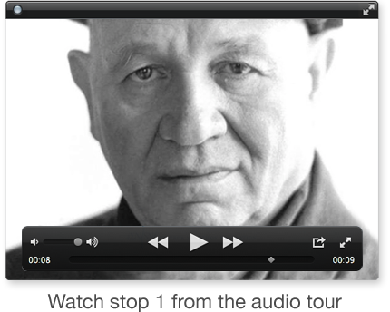
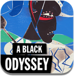

About the Artist and the Traveling Exhibition
In 1977, Romare Bearden (1911-1988), one of the most powerful and original artists of the 20th century, created a series of collages and watercolors based on Homer’s epic poem, The Odyssey.
Born in Charlotte, N.C., Bearden moved with his family to Harlem as a young child, part of the Great Migration of African Americans from the inhospitable South to greater opportunity in the North. Throughout his career, Bearden created images of the lives of travelers on their way to and from home, a theme no more powerfully explored than in his Odyssey series. Bearden had examined classical themes before, but The Odyssey series expanded his exploration of literary narratives and artistic genres by presenting his own personal reinterpretation of the subject.
Rich in symbolism and allegorical content, Bearden’s Odyssey series created an artistic bridge between classical mythology and African American culture. The works conveyed a sense of timelessness and the universality of the human condition, but their brilliance was displayed for only two months in New York City before being scattered to private collections and public art museums.
An engaging exhibition from the Smithsonian Institution Traveling Exhibition Service (SITES) represents the first full-scale presentation of these works outside of New York City. “Romare Bearden: A Black Odyssey” will embark on a seven-city national tour through 2014. Check our website for tour details.
Curated by Robert G. O’Meally, the Zora Neale Hurston Professor of English and Comparative Literature and founder and former director of the Center for Jazz Studies at Columbia University, the exhibition is organized by SITES in cooperation with the Romare Bearden Foundation and Estate and DC Moore Gallery.
“Romare Bearden: A Black Odyssey” and its related educational resources are supported by a grant from the Stavros Niarchos Foundation.
Art ©Romare Bearden Foundation/Licensed by VAGA, New York, NY.
Dive deeper into Romare Bearden
Check out our free audio guide app “Romare Bearden: A Black Odyssey” at the iTunes Store, and Google Play featuring expert interviews, commentary and storytelling accompanied by original music from DJ Spooky and Branford Marsalis.
Also, go online to find audio and video clips, creative educational materials, and links to more of the artist’s resources at the Smithsonian: www.sites.si.edu/romarebearden
This app and the companion audio guide app for the exhibition were designed and developed by GuideOne.
Thanks to the FreeSound.org community for the following sound samples: Birds Singing by Percy Duke, Wind Blowing by Laurent, Waves Crushing by Luftrum, People Chatter by Oniwe and Mystery by NicStage.